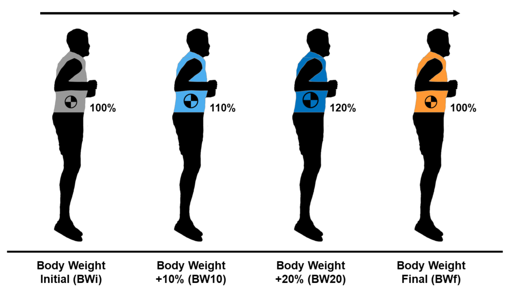
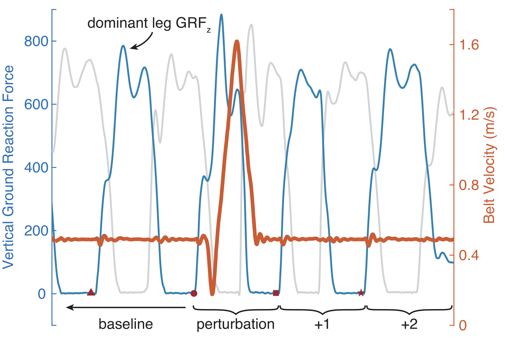
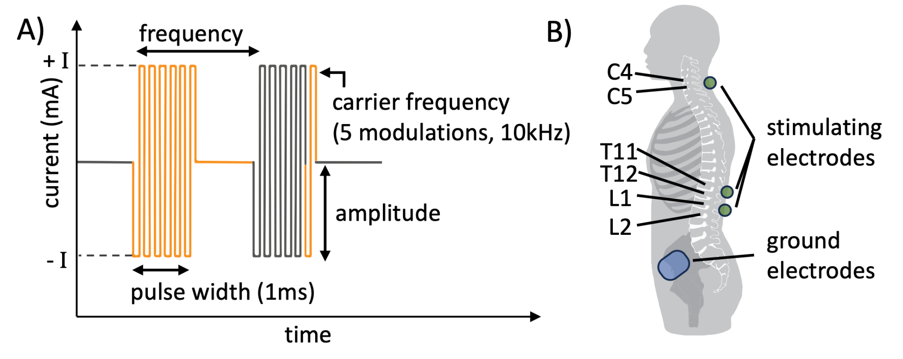
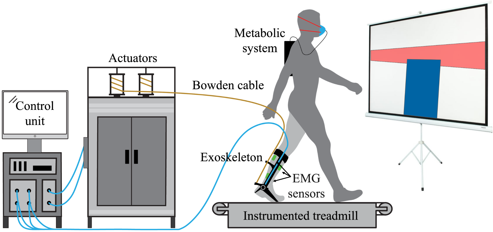
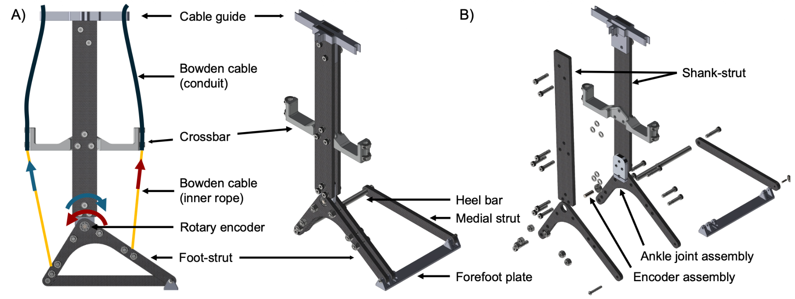

Three connected themes in wearable robotics, motor control, and rehabilitation engineering.
We study how people generate, adapt, and stabilize gait under changing conditions. Our work spans three connected themes: understanding movement, advancing training for more effective and retained motor learning, and designing assistive devices for use with robotic therapies.
Human walking is a complex interaction between biomechanics, neural control, and sensory feedback. This direction focuses on manipulating mechanics and sensory information during movement, to elucidate how the body and nervous system coordinate locomotion.

Humans continuously adapt their movements in response to changing mechanical demands. We investigate how added body mass alters the control of spring-like locomotion, examining changes in leg stiffness, muscle activity, and movement frequency before, during, and after loading.
Read paper
The nervous system relies on proprioceptive information to maintain stability and adapt movement in response to unexpected disturbances. We examine how individual differences in ankle proprioception influence recovery from trip-induced perturbations during walking.
Sustained improvements in walking require not just assistance, but effective learning. This direction focuses on developing and evaluating training paradigms that leverage task error, sensory feedback, and neuromodulation to accelerate and improve retention of motor learning.

We investigate how transcutaneous spinal cord stimulation (tSCS) influences proprioception, gait, and motor adaptation by altering the sensory signals available to the nervous system — and whether these processes can be manipulated to accelerate adaptation and improve rehabilitation outcomes.

We investigate how real-time biofeedback can accelerate motor learning and improve adaptation to wearable assistive devices. Work spans healthy individuals and people with lower-limb amputation, with the goal of developing more effective rehabilitation and assistive training strategies.
Wearable robotic devices are promising tools for enhancing mobility, but their effectiveness depends on how well they interact with the user. This direction focuses on device mechanics, control strategies, and feedback modalities that make wearable devices more effective in rehabilitation.

We developed a lightweight, tethered ankle exoskeleton capable of delivering both assistive and resistive torques during walking. The system combines off-board actuation, Bowden cable transmission, and closed-loop torque control to achieve precise, repeatable manipulation of ankle mechanics.